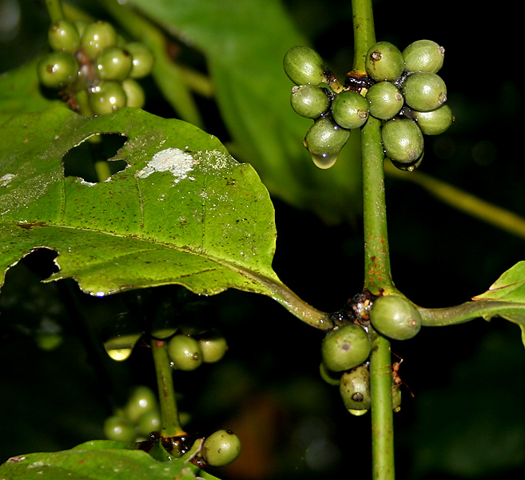

Biji Kopi Robusta
Feb 12, 2007Views : 3,487,497

Kopi robusta pertama kali ditemukan di Kongo pada tahun 1898. Kopi robusta dapat dikatakan sebagai kopi kelas 2,
karena rasanya yang lebih pahit, sedikit asam, dan mengandung kafeina dalam kadar yang jauh lebih banyak.
Selain itu, cakupan daerah tumbuh kopi robusta lebih luas daripada kopi arabika yang harus ditumbuhkan pada ketinggian tertentu.
Kopi robusta dapat ditumbuhkan dengan ketinggian 800 m di atas permuakaan laut. Selain itu, kopi jenis ini lebih resisten terhadap serangan hama dan penyakit.
Hal ini menjadikan kopi robusta lebih murah. Kopi robusta banyak ditumbuhkan di Afrika Barat, Afrika Tengah, Asia Tenggara, dan Amerika Selatan.